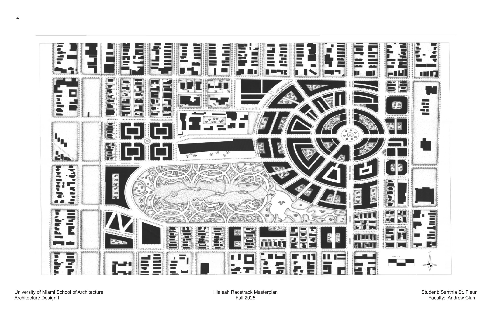
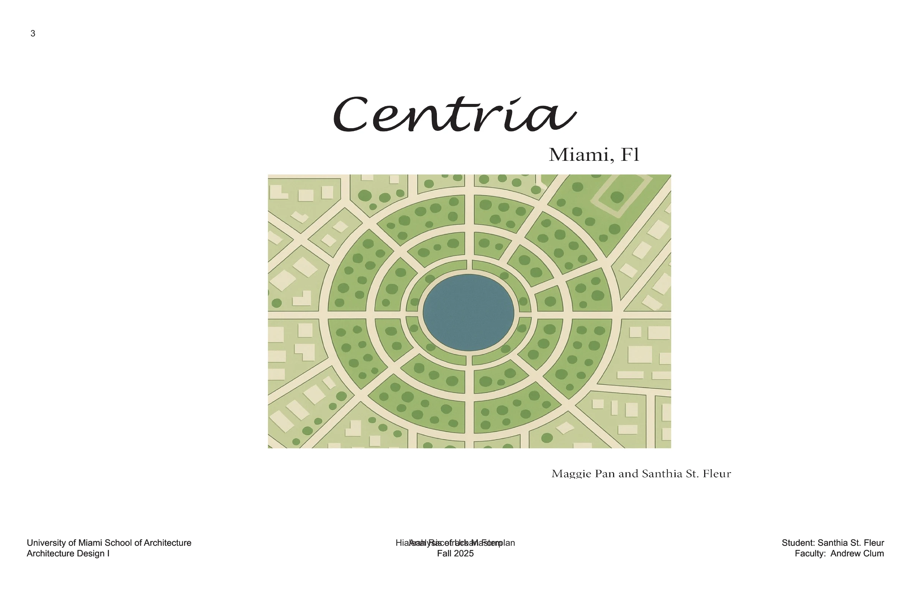
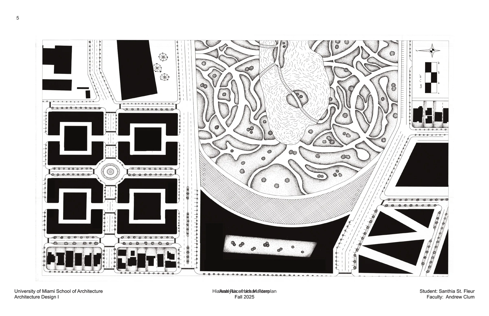
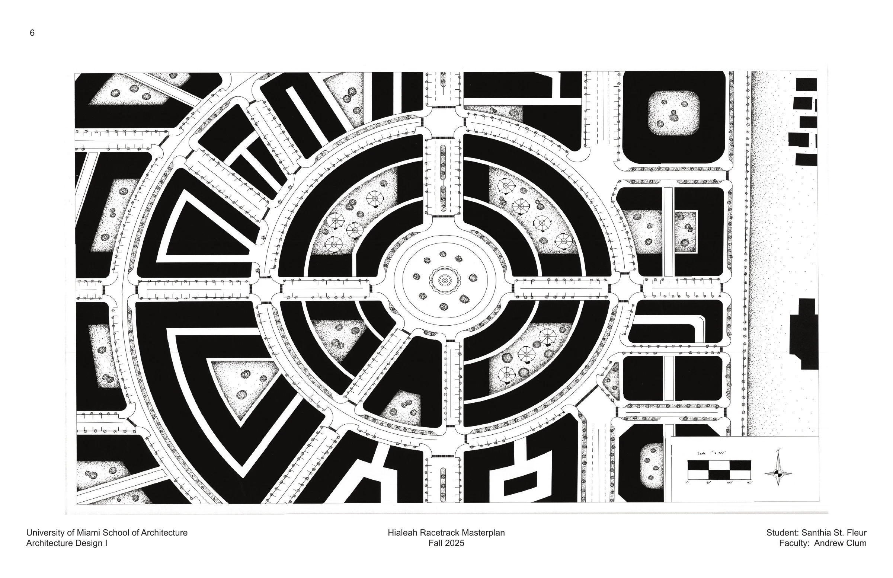
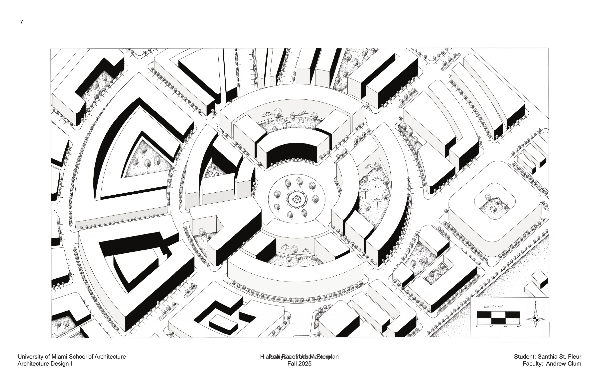
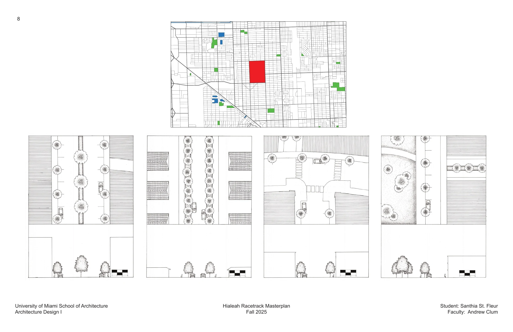
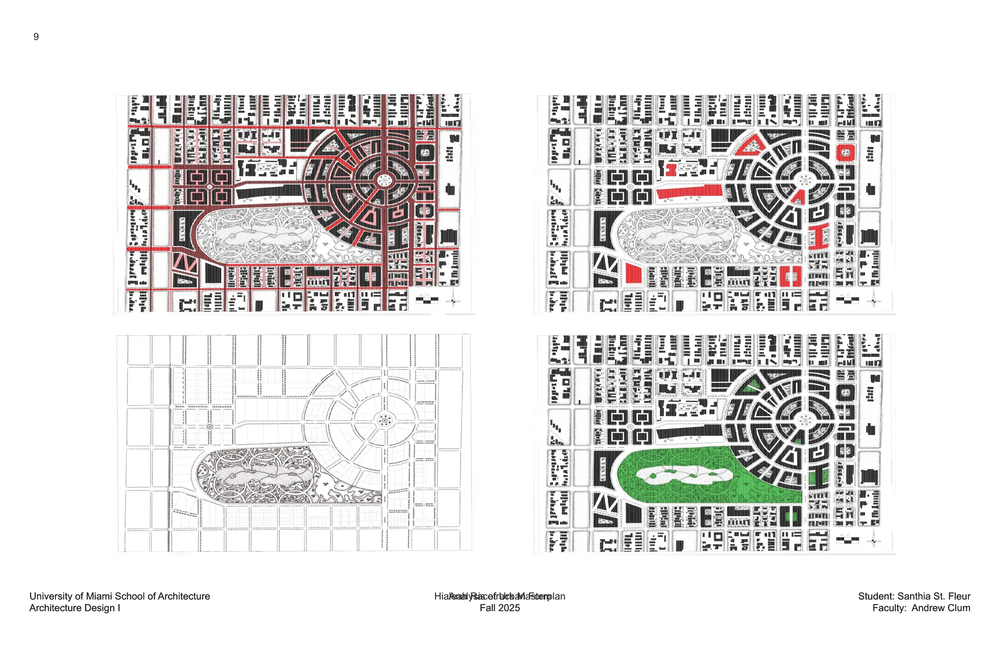
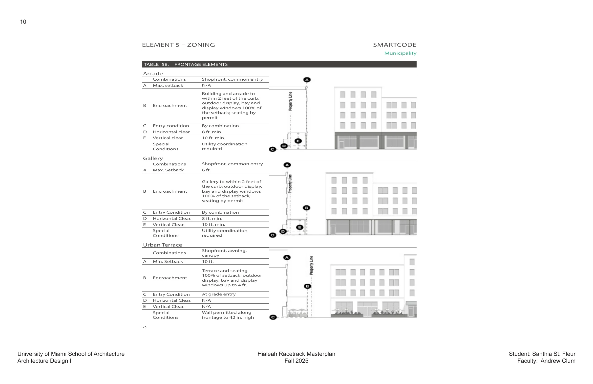

Projects / Project 03 · ARC 101: Design I
Hialeah Racetrack Masterplan
A walkable, connected community plan that responds to the history of the Hialeah Racetrack.

Hialeah Racetrack Masterplan explores how architecture and urban design can shape daily life at a human scale. The project reimagines the Hialeah Racetrack as a walkable, connected community that responds to the site’s history.
Its approach considers streets, public spaces, housing, and movement together to support a vibrant neighborhood.






